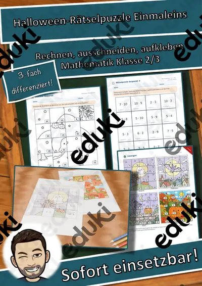
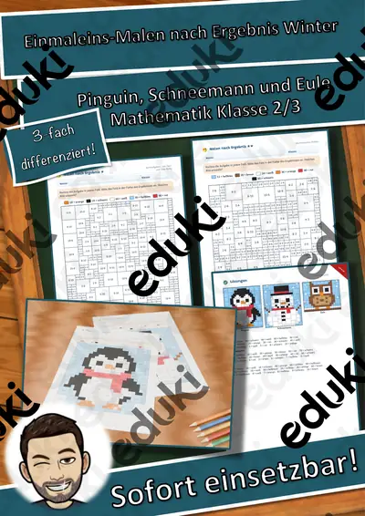
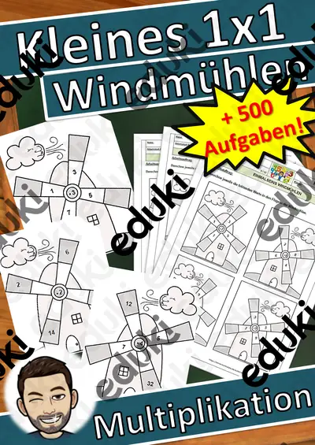
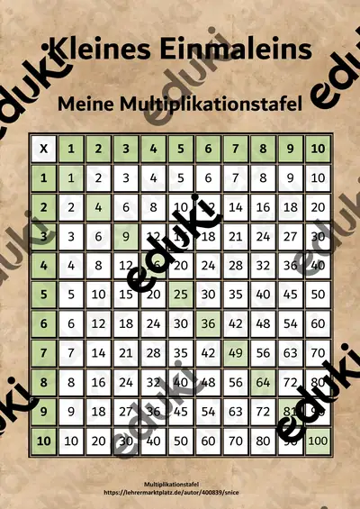

Das kleine Einmaleins: Arbeitsblätter für Klasse 2–4 (Mathematik)
Das kleine Einmaleins ist Grundlage des Rechnens ab Klasse 2. Kinder sollen Aufgaben automatisieren und Zusammenhänge zwischen Multiplikation und Division erkennen.
Zum Themenkern zählen Reihen, Tauschaufgaben und Verdopplungen. Als Vertiefung bieten sich Kernaufgaben und Division als Umkehrung an, am Ende steht oft Malkreuz.
Je nach Bundesland variiert die genaue Einordnung; üblich ist das Fach Mathematik in der Grundschule. Die Kinder lösen Einmaleinsaufgaben sicher und nutzen Beziehungen zwischen Aufgaben.
Wer Das kleine Einmaleins auf mehrere Stunden verteilt, startet mit Reihen, übt an Verdopplungen und schließt mit Division als Umkehrung ab. Alle Blätter sind kopierfertig und enthalten Lösungen für die schnelle Kontrolle.
Zum Thema finden Sie 22 Materialien, unter anderem Domino-Werkstatt: Domino Einmaleins mit, Einmaleins Megasparpaket Einmaleins (wachsend) und Einmaleins Materialpaket Spiele (auch, verteilt auf Arbeitsblätter und Übungen in Klasse 2–5. Täglich fünf Minuten gemischtes Üben bringen mehr als eine lange Einheit pro Woche.
Das gehört zum Thema
Passende Arbeitsblätter und Materialpakete

Domino-Werkstatt: Domino Einmaleins mit Darstellungen – Plus-Paket, Klasse 2–4

Einmaleins Megasparpaket Einmaleins (wachsend)

Einmaleins Materialpaket Spiele (auch Homeschooling) (kleines Einmaleins)

Einmaleins Materialpaket - Homeschooling (kleines Einmaleins) (auch Homeschooling)

Domino-Werkstatt: Domino Einmaleins mit Darstellungen – kostenlos, Klasse 2–4

Rechenmosaik Adventskranz: Einmaleins 6er bis 9er – lösen, kleben, ausmalen in 3 Stufen (Klasse 3)

Rechenmosaik Laterne: Einmaleins 2er bis 5er und 10er – lösen, kleben, ausmalen in 3 Stufen (Klasse 2)

Halloween-Rätselpuzzle Einmaleins – Gespenst, Fledermaus, Katze und Kürbis, 3-fach differenziert mit Selbstkontrolle (Klasse 2/3)

Einmaleins-Malen nach Ergebnis Winter – Pinguin, Schneemann, Eule, 3-fach differenziert mit Selbstkontrolle (Klasse 2/3)

Einmaleins Windmühlen (auch Homeschooling) kleines Einmaleins

Einmaleins-Sätze (auch Homeschooling)

Homeschooling Bilder-Einmaleins (kleines Einmaleins) (auch Homeschooling)

Einmaleins Schiffe versenken - (auch Homeschooling)

Einmaleins Domino

Einmaleins - Merk es dir! (kleines Einmaleins)

Einmaleins Fächer, kleines Einmaleins Fächer (auch Homeschooling)

Übungsheft Homeschooling kleines Einmaleins, Klecksaufgaben (auch Homeschooling)

Übungsheft Multiplikation Übungsheft (auch Homeschooling)

Kleines Einmaleins, Einmaleins Übungsaufgaben (auch Homeschooling)

Einmaleins Spiel (kleines Einmaleins)

Kleines Einmaleins - Einmaleinstabelle - Einmaleins

Einmaleins Bingo (kleines Einmaleins) (auch Homeschooling)
Häufige Fragen
Für welche Klassenstufe passen die Arbeitsblätter zu Das kleine Einmaleins?
Der Schwerpunkt liegt auf Klasse 3; insgesamt deckt die Auswahl (22 Titel) Klasse 2–5 ab. In der Beschreibung jedes Materials steht die empfohlene Stufe.
Welche Inhalte decken die Materialien zu Das kleine Einmaleins ab?
Die Materialien arbeiten an Reihen, Tauschaufgaben und Verdopplungen und gehen dann weiter zu Kernaufgaben, Division als Umkehrung und Malkreuz. Vorab lohnt ein Blick in den Lehrplan des eigenen Bundeslandes.
Wie setze ich Das kleine Einmaleins im Unterricht ein?
Täglich fünf Minuten gemischtes Üben bringen mehr als eine lange Einheit pro Woche. So entsteht aus den Blättern eine kleine Einheit, die sich auf zwei bis drei Stunden verteilen lässt.
Mehr Material nach Fach und Klasse
Verwandte Lehrplanthemen
- Addition und Subtraktion (Mathematik, Klasse 1–4)
- Daten, Diagramme und Wahrscheinlichkeit (Mathematik, Klasse 3–9)
- Geometrie: Körper, Flächen und Formen (Mathematik, Klasse 1–6)
- Größen, Einheiten und Uhrzeit (Mathematik, Klasse 2–6)
- Zahlenraum und Stellenwerte (Mathematik, Klasse 1–4)